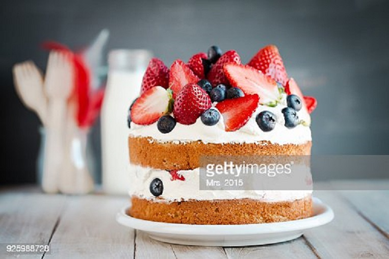
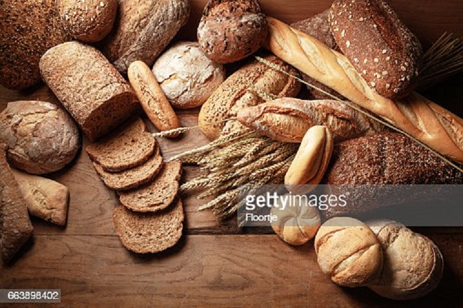

Our Food
See what we're serving up!

DONUTS

CAKES

Artisan Bakers makes a full range of artisan breads and pastries from our famous Ashland Sourdough by Apple Cellar Bakery to creations like our Mustard Seed Sauerkraut bread from the the Village Baker. All our products are made from natural and local ingredients with no preservatives.
Best consumed within a few hours of baking this iconic french bread is one of the most popular bread found worldwide. French bread law protects the integrity of the ingredients used to make baguettes.
Allowing time and temperature to develop the natural yeasts in the environment and raise the bread is not a new idea. The widespread use of commercial yeast nearly lost this artisan bread.
Rye bread is high in fibre and has an extremely strong flavour when compared to other flours. A lack of gluten in rye flour can often lead to dense, heavy bread. Combining rye and white flour is a common method that is used to make great tasting bread.
See what we're serving up!
"Our mission is to bring rustic naturally leavened loaves to your dining table each and everyday. Baking is a method of preparing food that uses dry heat, typically in an oven, but can also be done in hot ashes, or on hot stones. The most common baked item is bread but many other types of foods are baked.Heat is gradually transferred "from the surface of cakes, cookies, and breads to their center.But we add more than than ingredients into our baked goods. Our secret ingredient is love.It increases the taste tenfold.As heat travels through, it transforms batters and doughs into baked goods and more with a firm dry crust and a softer center"

"Baking is not simply an Art but a form of expression and love.We provide our services in the form of cookies, artisan bread, cakes and different baked goods with different and unique flavours.Our speciality happens to be the sour artisan bread.As heat travels through, it transforms batters and doughs into baked goods and more with a firm dry crust and a softer center.Similarly our baked goods are the transformation of the high quality ingredients we use and they happen to melt in your mouth."